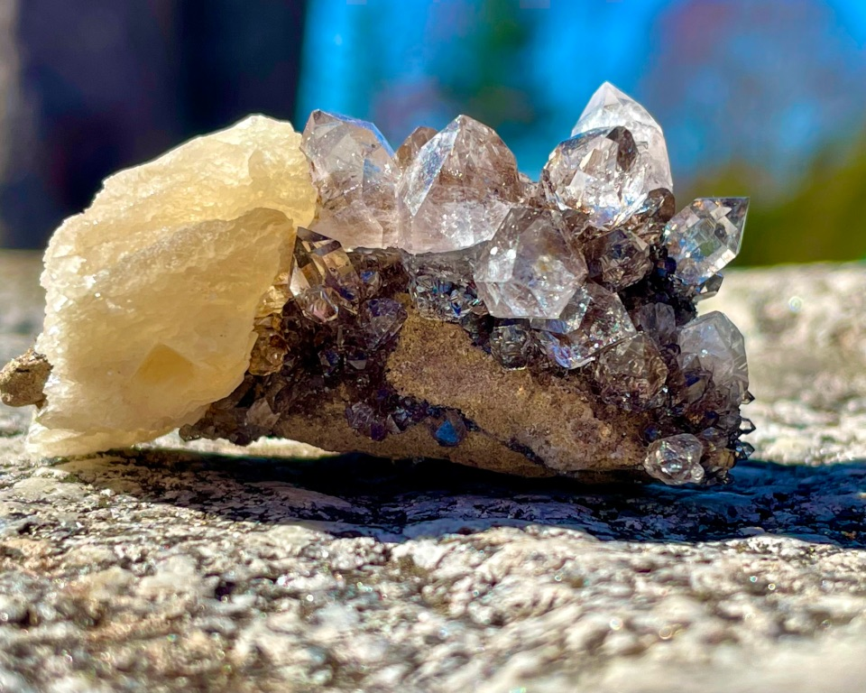

Herkimer Diamonds
Location Found
The Herkimer diamond is a beautiful stone. It mimics the facets and characteristics of a genuine diamond. Herkimer diamonds are quartz crystals. They are over 500 million years old and are rumored to be discovered by the Mohawk Indians accidentally. They are only found by the Mohawk River in Herkimer County, New York. They are not commercially mined due to the tight restrictions of New York.
Characteristics
As the name suggests, the Herkimer diamond resembles the appearance of a diamond. They are transparent and shiny and, although not as hard as a diamond, can scratch the surface of glass. They register a 7-7.5 on the Mohs Hardness Scale, with the most valuable Herkimer diamond being crystal clear. The average size is approximately one inch in length. Due to the unique nature of how they grow, the Herkimer diamond is described as double terminated, which means both ends come to a point. Not all quartz that are double pointed are Herkimer diamonds.
Metaphysical Properties
Herkimer diamond is believed to have healing powers, increased spiritual energy, and opening of the crown and third eye of chakras. Due to it being doubly terminated, they have the ability to not only transmit their own energies but to receive spiritual energy and amplify and focus it intently. Known as the "Stone of Attunement," it can help those looking to experience astral travel or have lucid dreams.